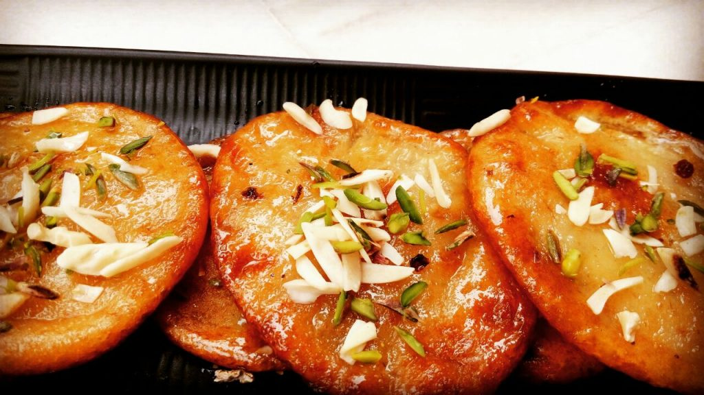

Malpuda Recipe

Description
Malpua, hailing from the diverse culinary landscape of India, is a melt-in-your-mouth sweet treat that tantalizes taste buds with its contrasting textures and vibrant flavors.
In North India, the batter typically comprises all-purpose flour, curd (yogurt), spices like cardamom and fennel, and sometimes even khoya (dried milk solids).
Ingredients
- 1 cup all-purpose flour (maida)
- 1/4 cup milk
- 1/4 cup chopped green cardamom pods
- 1/4 teaspoon fennel seeds (saunf)
- Desi Ghee for frying
Steps
- In a large bowl, whisk together the flour, milk powder, milk, water, cardamom pods, fennel seeds, baking soda, and vanilla extract until a smooth batter forms.
- Cover the bowl and let it rest for 30 minutes.
- In a saucepan, combine the sugar, water, cardamom powder, and saffron strands (if using)
- Bring to a boil over medium heat, then reduce heat and simmer for 5-7 minutes, or until the syrup thickens slightly.
- Dip a ladle into the batter and pour it into the hot oil, making sure to spread it into a thin circle.